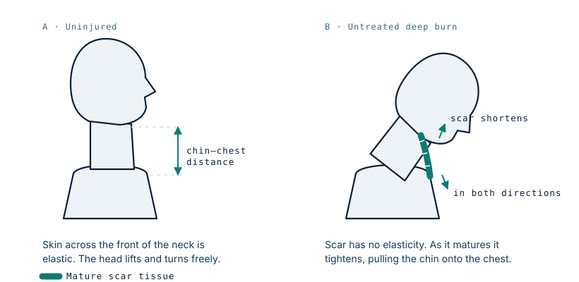

The girl whose face healed to her chest
Zubaida Hasan survived the fire. What nearly destroyed her was what her own body did over the six months that followed, with no surgeon to stop it.
What happened
In August 2001, in a nomadic family's home in Farah province in western Afghanistan, a nine-year-old was pouring kerosene into a cooking stove that was still hot. The fuel ignited. She caught fire, and by the time the flames were out she had deep burns across her face, neck, chest and arms.
What happened next mattered more than the fire itself. Her father took her to the nearest medical provider, who gave her ointments. Nothing else was available. As she got worse, he took her across the border to a hospital in Iran, where she stayed twenty days before being discharged. The advice he was given was to take his daughter home to die.
Why the burn kept doing damage
A deep burn does not stop at the moment of injury. When skin is destroyed through its full thickness and nothing replaces it, the body closes the gap the only way it can: with scar tissue. Scar tissue is not skin. It has almost none of skin's elasticity, and as it matures over weeks and months it tightens, pulling everything anchored to it toward the centre of the wound.
In a burn crossing the front of the neck, that contracture pulls the chin down toward the chest. Zubaida's face healed to her chest wall. Her lower lip was drawn downward, her mouth could not close, and the pull reached her eyelids, so she could not close her eyes to sleep. Eating was difficult. Her head barely moved.

This is the part of her case that carries the widest lesson. The disfigurement was not caused by the flames. It was caused by ten months of unopposed healing in a body that had no other option, and it took roughly six months to fully set in. In a burn unit, the same injury would have been met with early excision and grafting, splinting to hold the neck in extension, and pressure garments — all of them aimed squarely at preventing exactly this.
Getting to a surgeon
In February 2002, on the advice of local shopkeepers, her father approached American soldiers in Afghanistan for help. That request moved through an unlikely chain: an army base in Kabul, military doctors, the U.S. State Department, and finally Dr Peter Grossman, a plastic and reconstructive surgeon at the Grossman Burn Center in Sherman Oaks, California. The Children's Burn Foundation covered the cost, which was estimated in the region of a million dollars.
Treatment began in June 2002, some ten months after the fire.
The reconstruction
Grossman described the case as among the most severe he had seen. The first operation was the one everything else depended on: cutting through the deep scar to separate her face from her chest and give the tissue somewhere to go.
Releasing a contracture creates an immediate problem. The moment the scar is divided, the tissue springs apart and leaves a defect far larger than the incision — that gap is the measure of how much the scar had been pulling. It has to be resurfaced, in her case with skin grafts taken from her back, and then held in the released position while it heals, because scar that is allowed to relax back will simply contract again.
Twelve major operations followed over about a year, staged rather than combined. Staging is standard in reconstruction of this size: each graft needs to take and mature before the next release, and the surgical priorities run in a fixed order — function before appearance. Eyelid closure protects the cornea. Mouth competence allows eating and speech. Neck extension allows the head to move and the airway to be managed if she ever needs anaesthesia again. Appearance comes after all of that.
What happened to her
Her father returned to Afghanistan to care for her eight siblings, and Zubaida stayed in California, living for a period with the Grossman family. She learned English, attended school for the first time in her life, and made friends. After a year of surgery she went home. Her parents, who had no way of receiving photographs during that year, did not recognise her.
Her story was later told in national television coverage and in a book, and it remains one of the most widely documented reconstructive burn cases of its decade.
What this case teaches
The severity of a burn outcome is set less by the injury than by what happens in the months after it. Early excision, grafting, splinting and pressure care exist to prevent contracture, and where they are unavailable the deformity that follows is predictable rather than random. Reconstruction can reverse a great deal of it, but at the cost of many operations that early treatment would have avoided.
A note on images
Photographs of this case are held by the treating institution and by news organisations, and are not reproduced here. Readers looking for the clinical imagery will find it through those original sources.